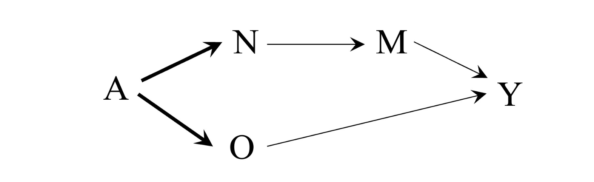
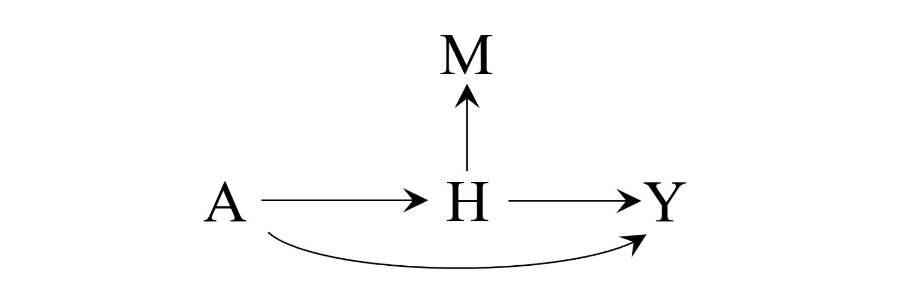
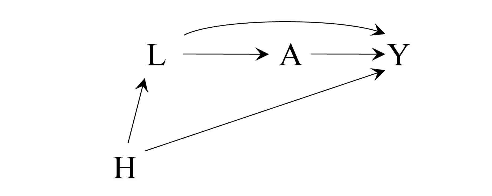

23.1 Mediation analysis under attack
1. Introduction: From Total Effect to Mechanisms
인과추론의 Part III까지 우리는 시간이 지남에 따라 지속되는 치료 전략(treatment strategies) 하에서 결과(outcome)의 분포가 어떻게 변하는지를 정량화하는 데 집중했습니다. 즉, “치료가 효과가 있는가?”에 대한 답을 구하는 것이었지, “치료가 어떻게 효과를 발휘하는가?”에 대한 메커니즘을 밝히는 것은 아니었습니다.
이제 우리는 인과 매개(Causal Mediation) 분석으로 시선을 돌립니다. 이는 치료(\(A\))가 결과(\(Y\))에 영향을 미치는 인과적 경로(causal pathways)를 연구하는 분야입니다.
매개 분석은 시변(time-varying) 치료가 있는 인과추론의 특수한 형태로 볼 수 있습니다. 단일 치료가 여러 시점에 존재하는 대신, 여기서는 관심 있는 치료(\(A\))와 그 이후에 측정되는 매개변수(Mediator, \(M\))라는 두 가지 다른 변수를 다루게 됩니다.
본 포스트에서는 Hernán & Robins의 What If Chapter 23.1을 바탕으로, 매개 분석의 기본 정의인 Pure Direct Effect와 Total Indirect Effect를 살펴보고, 이 개념들이 왜 통계적/철학적 공격(Attack)을 받고 있는지 정리합니다.
2. Motivating Example & Causal Structure
- 직관적인 이해를 위해 금연 실험(Smoking Cessation Trial)을 예로 들어보겠습니다.
- Treatment (\(A\)): 흡연 여부 (\(1\): 지속, \(0\): 금연)
- Mediator (\(M\)): 6개월 후 고혈압 여부 (\(1\): 있음, \(0\): 없음)
- Outcome (\(Y\)): 1년 후 심근경색 발생 여부
- 연구자들은 금연이 심근경색 위험을 줄인다는 유익한 효과(\(E[Y|A=1] > E[Y|A=0]\))를 확인했습니다. 이제 연구자들의 관심사는 다음과 같습니다.
- “이 효과가 금연으로 인해 고혈압(\(M\))이 감소했기 때문에 발생한 것인가? 아니면 고혈압과 무관한 다른 경로로 발생한 것인가?”
- 이 상황을 인과 다이어그램(DAG)으로 나타내면 다음과 같습니다.

- 설명: 치료 \(A\)에서 결과 \(Y\)로 가는 경로는 두 가지입니다. 하나는 \(M\)을 거쳐가는 간접 경로(\(A \rightarrow M \rightarrow Y\))이고, 다른 하나는 \(M\)을 거치지 않는 직접 경로(\(A \rightarrow Y\))입니다. 여기서 \(M\)과 \(Y\) 사이의 측정되지 않은 공통 원인(Unmeasured Confounder)은 없다고 가정합니다.
3. Defining Direct and Indirect Effects
Robins와 Greenland(1992)는 총 효과(Total Effect)를 Pure Direct Effect (순수 직접 효과)와 Total Indirect Effect (총 간접 효과)로 분해하는 방법을 제안했습니다. Pearl(2001)은 이를 각각 Natural Direct Effect와 Natural Indirect Effect로 칭하기도 했습니다.
이를 정의하기 위해서는 잠재적 결과(Counterfactual Outcome) 표기법을 확장해야 합니다.
\(Y^{a, m}\)은 치료가 \(a\)로, 매개변수가 \(m\)으로 설정되었을 때의 개인의 잠재적 결과를 의미합니다.
3.1. Pure Direct Effect (PDE)
순수 직접 효과는 “만약 모든 개인이 치료를 받지 않았을 때(\(A=0\)) 가졌을 매개변수 값(\(M^{a=0}\))을 그대로 유지한 상태에서, 치료만 \(A=1\)로 바꾸었을 때 발생하는 효과”로 정의됩니다.
수식으로는 다음과 같이 표현됩니다: \[ \text{PDE} = E[Y^{a=1, M^{a=0}}] - E[Y^{a=0, M^{a=0}}] \]
- \(E[Y^{a=1, M^{a=0}}]\): 치료는 \(1\)을 받았지만, 매개변수 \(M\)은 치료를 받지 않았을 때(\(a=0\))의 자연적인 값을 가질 때의 평균 결과.
- \(E[Y^{a=0, M^{a=0}}]\): 치료도 \(0\)이고, 매개변수도 그에 따른 자연적인 값을 가질 때의 평균 결과 (일반적인 \(E[Y^{a=0}]\)와 동일).
3.2. Total Indirect Effect (TIE)
총 간접 효과는 “치료는 \(A=1\)로 고정한 상태에서, 매개변수 \(M\)만 \(A=0\)일 때의 값에서 \(A=1\)일 때의 값으로 변할 때 발생하는 효과”입니다.
수식으로는 다음과 같습니다: \[ \text{TIE} = E[Y^{a=1, M^{a=1}}] - E[Y^{a=1, M^{a=0}}] \]
3.3. Decomposition of Total Effect
- 이 두 효과를 합치면 총 효과(Total Effect)가 됩니다. \[ \begin{aligned} \text{Total Effect} &= E[Y^{a=1}] - E[Y^{a=0}] \\ &= E[Y^{a=1, M^{a=1}}] - E[Y^{a=0, M^{a=0}}] \\ &= \underbrace{(E[Y^{a=1, M^{a=1}}] - E[Y^{a=1, M^{a=0}}])}_{\text{Total Indirect Effect}} + \underbrace{(E[Y^{a=1, M^{a=0}}] - E[Y^{a=0, M^{a=0}}])}_{\text{Pure Direct Effect}} \end{aligned} \]
4. The “Cross-World” Problem and Identification
- 여기서 문제가 되는 항은 바로 \(E[Y^{a=1, M^{a=0}}]\)입니다. 이 값은 Cross-world quantity라고 불립니다. 왜냐하면 한 개인에게 동시에 발생할 수 없는 두 가지 상반된 세상(\(a=1\)인 세상과 \(a=0\)인 세상)의 조건이 결합되어 있기 때문입니다.
- 흡연을 계속한 사람(\(A=1\))에게, “만약 당신이 금연했다면 가졌을 혈압(\(M^{a=0}\))”을 부여하고 심장병 위험을 측정해야 합니다. 하지만 이 사람은 실제로 흡연을 했으므로 \(M^{a=0}\)은 관측할 수 없습니다.
- 반대로 금연한 사람(\(A=0\))은 \(M^{a=0}\)은 알지만, \(A=1\) 상황에서의 결과는 알 수 없습니다.
- 따라서 이 값은 어떠한 실험적 개입(experimental intervention)으로도 직접 검증할 수 없습니다.
4.1. The Mediation Formula
- 그럼에도 불구하고, 특정 가정 하에서는 이 값을 관측된 데이터로부터 식별할 수 있습니다. 이를 Mediation Formula라고 합니다.
\[ E[Y^{a=1, M^{a=0}}] = \sum_{m} E[Y|A=1, M=m] \Pr(M=m|A=0) \]
4.2. Mathematical Derivation (Technical Point 23.1)
- 이 공식을 유도하기 위해서는 NPSEM-IE (Non-Parametric Structural Equation Model with Independence of Errors) 가정이 필요합니다. 특히 Cross-world conditional independence 가정이 핵심입니다.
증명 과정:
우리의 목표는 \(E[Y^{a=1, M^{a=0}}]\)를 식별하는 것입니다.
- 확률의 법칙 (Law of Iterated Expectations):
- \(M^{a=0}\)가 가질 수 있는 모든 값 \(m\)에 대해 기댓값을 분해합니다. \[ E[Y^{a=1, M^{a=0}}] = \sum_{m} E[Y^{a=1, m} | M^{a=0}=m] \Pr(M^{a=0}=m) \]
- Cross-world Independence 가정 (\(Y^{a=1, m} \perp\!\!\perp M^{a=0}\)):
- 이 단계가 가장 중요하고 논쟁적인 부분입니다. “치료를 1로 설정하고 매개변수를 \(m\)으로 설정했을 때의 결과”와 “치료를 0으로 설정했을 때의 매개변수 값”이 서로 독립이라고 가정합니다.
- 이 가정을 통해 조건부 기댓값에서 조건문 \(M^{a=0}=m\)을 제거할 수 있습니다. \[ = \sum_{m} E[Y^{a=1, m}] \Pr(M^{a=0}=m) \]
- Exchangeability (교환가능성) & Consistency (일치성):
- 이제 각 항은 단일 세상(\(A=1\) 또는 \(A=0\))에 대한 반사실적 구문이므로, 일반적인 인과추론 가정(교란요인 통제) 하에 관측 데이터로 변환할 수 있습니다. \[ = \sum_{m} E[Y | A=1, M=m] \Pr(M=m | A=0) \]
이 유도 과정은 Figure 23.1이 NPSEM-IE를 나타낼 때만 성립하며, FFRCISTG 모델에서는 성립하지 않습니다.
5. Why “Under Attack”? (Critique)
- 매개 분석, 특히 Pure Direct Effect와 Mediation Formula는 강력한 비판에 직면해 있습니다. 비판의 핵심은 검증 불가능성(Unverifiability)입니다.
5.1. Unverifiable Assumptions
- Mediation Formula의 증명에 사용된 Cross-world independence (\(Y^{a=1, m} \perp M^{a=0}\))는 데이터로 검증할 수 없습니다. 왜냐하면 \(Y^{a=1, m}\)과 \(M^{a=0}\)는 결코 한 개인에게서 동시에 관측될 수 없기 때문입니다. 아무리 완벽한 무작위 실험(Randomized Experiment)을 수행하더라도 이 독립성을 확인할 방법은 없습니다.
5.2. NPSEM-IE vs. FFRCISTG
- 이것이 바로 저자들이 NPSEM-IE 모델보다 FFRCISTG (Finest Fully Randomized Causally Interpreted Structured Tree Graph) 모델을 선호하는 이유입니다.
- NPSEM-IE: Cross-world independence를 가정함. PDE, TIE를 점 추정(point identification)할 수 있음.
- FFRCISTG: Cross-world independence를 가정하지 않음. 이 모델 하에서는 PDE와 TIE를 식별할 수 없으며, 단지 상한과 하한(bounds)만 구할 수 있음.
5.3. Policy Relevance
- 정책 입안자들은 Pure Direct Effect에 대해 회의적일 수 있습니다. 왜냐하면 PDE는 “현실 세계에서 실행 가능한 개입(Intervention)”에 대응하지 않기 때문입니다.
- 우리는 사람들에게 담배를 피우게 하면서(\(A=1\)), 동시에 그들의 혈압만 금연했을 때와 똑같이(\(M^{a=0}\)) 만드는 마법 같은 개입을 할 수 없습니다. 실현 불가능한 시나리오에 기반한 추정치는 정책적 중요성이 떨어진다는 비판입니다.
23.2 A defense of mediation analysis
1. Introduction: The Skepticism Surrounding Mediation
인과추론(Causal Inference)에서 매개 분석(Mediation Analysis)은 치료(\(A\))가 결과(\(Y\))에 미치는 영향을 매개변수(\(M\))를 통하는 경로와 그렇지 않은 직접 경로로 분해하는 것을 목표로 합니다. 하지만 이 과정은 이론적으로 매우 까다로운 문제를 안고 있습니다.
특히 Pure Direct Effect (PDE)와 Total Indirect Effect (TIE)를 식별하기 위해서는 \(Y^{a=1, M^{a=0}}\)과 같은 Cross-world Counterfactual이 필요합니다. 이는 “치료를 받았지만(\(a=1\)), 매개변수의 값은 치료를 받지 않았을 때(\(a=0\))와 동일하게 설정된 상황”을 의미합니다.
문제는 현실 세계에서 한 개인에게 \(a=1\)과 \(a=0\)을 동시에 적용할 수 없기 때문에, 이 두 조건이 결합된 변수(\(Y^{a=1, m}\)과 \(M^{a=0}\))의 독립성은 실험적으로 검증할 수 없다는 점입니다.
이러한 이유로 FFRCISTG (Finest Fully Randomized Causally Interpretable Structured Tree Graph) 모델을 지지하는 연구자들은 검증 불가능한 가정을 포함하는 NPSEM-IE (Non-Parametric Structural Equation Model with Independence Errors) 모델에 비판적입니다. 정책 입안자들 또한 “현실에서 존재하지 않는 개입(intervention)”에 기반한 PDE가 공중 보건학적으로 어떤 의미가 있는지 의문을 제기합니다.
본 포스트에서는 Hernán & Robins의 What If 책 23.2절을 바탕으로, 이러한 비판에 대해 NPSEM-IE 지지자들이 제시하는 “치료 분해(Treatment Decomposition)” 논리를 정리하고, 이것이 어떻게 매개 효과를 현실적인 개입(intervention)으로 연결하는지 설명합니다.
2. The Decomposition Strategy: Nicotine & Cigarettes
- 회의론자들을 설득하기 위해 연구자들은 치료 \(A\)를 두 가지 분리 가능한 성분(separable components)으로 나누는 “Story”를 제안합니다. 금연 실험(Smoking Cessation Trial)을 예로 들어보겠습니다.
- \(A\): 담배 흡연 여부 (1: 흡연, 0: 금연)
- \(M\): 고혈압 (Hypertension)
- \(Y\): 심장병 (Heart Disease)
- 여기서 담배(\(A\))라는 치료를 다음 두 가지 성분으로 분해합니다:
- \(N\) (Nicotine): 니코틴 성분
- \(O\) (Other components): 니코틴을 제외한 기타 성분 (타르 등)
2.1 Key Assumptions (Exclusion Restrictions)
- 이 분해 전략이 유효하려면 두 가지 핵심적인 “No Direct Effect” 가정이 필요합니다:
- Assumption (i): 니코틴(\(N\))은 심장병(\(Y\))에 직접적인 영향을 미치지 않는다. (\(N \nrightarrow Y\))
- 즉, 니코틴은 오직 고혈압(\(M\))을 통해서만 심장병에 영향을 줍니다.
- Assumption (ii): 기타 성분(\(O\))은 고혈압(\(M\))에 직접적인 영향을 미치지 않는다. (\(O \nrightarrow M\))
- 즉, 기타 성분은 고혈압을 거치지 않고 심장병에 직접 영향을 줍니다.
- 이 가정들은 아래의 인과 다이어그램(DAG)으로 표현됩니다.

- 위 그림에서 \(A\)에서 \(N, O\)로 가는 화살표가 굵게 표시된 것은 결정론적 관계를 의미합니다. 원래 데이터에서는 담배를 피우면(\(A=1\)) 니코틴과 기타 성분을 모두 섭취(\(N=1, O=1\))하고, 피우지 않으면(\(A=0\)) 둘 다 섭취하지 않습니다(\(N=0, O=0\)).
3. From Cross-World to Single-World
- 이 분해(Decomposition)가 중요한 이유는 추상적인 Cross-world counterfactual을 현실적인 개입(Intervention)으로 번역해주기 때문입니다.
3.1 The “Nicotine-Free Cigarette” Intervention
우리가 알고 싶은 PDE와 관련된 파라미터는 \(E[Y^{a=1, M^{a=0}}]\)입니다. 이 수식은 “담배를 피우되(\(a=1\)), 혈압은 담배를 안 피웠을 때(\(a=0\))와 같게 유지한다면 심장병 위험이 어떨까?”를 묻습니다.
이 난해한 질문은 분해된 성분을 이용하면 다음과 같이 구체적인 정책 질문으로 바뀝니다:
- “모든 흡연자가 ’니코틴이 제거된 담배(Nicotine-free cigarettes)’를 피우게 된다면 심장병 위험은 어떨까?”
- 니코틴 제거 담배는 \(N=0\) (니코틴 없음)이고 \(O=1\) (기타 성분 있음)인 상태입니다.
가정 (ii)에 의해, \(O\)는 \(M\)에 영향을 주지 않으므로, \(N=0\)일 때의 혈압(\(M\))은 담배를 아예 안 피웠을 때(\(A=0 \implies N=0, O=0\))의 혈압과 같습니다. \[M^{n=0, o=1} = M^{n=0, o=0} = M^{a=0}\]
가정 (i)에 의해, \(N\)은 \(Y\)에 직접 영향을 주지 않으므로, \(N=0\)인 상태에서 \(O=1\)일 때의 심장병(\(Y\)) 위험은, \(A=1\) (\(N=1, O=1\))이면서 \(M\)만 조절된 상태와 같습니다.
결국, 다음의 등식이 성립합니다: \[E[Y^{a=1, M^{a=0}}] = E[Y^{n=0, o=1}]\]
이제 우리는 검증 불가능한 \(Y^{a=1, M^{a=0}}\) 대신, 물리적으로 구현 가능한 개입인 \(Y^{n=0, o=1}\)을 추정하는 문제가 됩니다.
4. Mathematical Identification via g-formula
이제 목표는 \(E[Y^{n=0, o=1}]\)을 관측된 데이터 \((A, M, Y)\)로 식별(Identify)하는 것입니다.
문제는 기존 데이터에는 \(N=0\)이면서 \(O=1\)인 사람(니코틴 없는 담배를 피우는 사람)이 없다는 점입니다(Positivity Violation).
하지만 앞서 세운 가정 (i), (ii) 덕분에, g-formula를 사용하여 이를 식별할 수 있습니다.
4.1 Derivation Steps
- FFRCISTG 모델 하에서, \(N\)과 \(O\)에 대한 교환성(Exchangeability)이 성립한다고 가정하면, g-formula는 다음과 같습니다:
\[E[Y^{n=0, o=1}] = \sum_{m} E[Y \mid O=1, M=m] P(M=m \mid N=0)\]
여기서 DAG의 구조(Figure 23.2)와 결정론적 관계(\(A=1 \iff N=1, O=1\))를 이용해 식을 변형합니다.
- First Term (\(P(M|N=0)\)):
- DAG에서 \(O\)는 \(M\)의 부모가 아닙니다 (가정 ii). 따라서 \(P(M|N=0)\)은 \(P(M|N=0, O=0)\)과 같습니다.
- \(N=0, O=0\)은 곧 \(A=0\)입니다.
- 따라서, \(P(M \mid N=0) = P(M \mid A=0)\).
- Second Term (\(E[Y|O=1, M]\)):
- DAG에서 \(N\)은 \(Y\)의 부모가 아닙니다 (가정 i). 따라서 \(E[Y|O=1, M]\)은 \(E[Y|O=1, N=1, M]\)과 같습니다.
- \(N=1, O=1\)은 곧 \(A=1\)입니다.
- 따라서, \(E[Y \mid O=1, M=m] = E[Y \mid A=1, M=m]\).
4.2 The Result: Mediation Formula
- 위의 변형을 종합하면 g-formula는 다음과 같이 정리됩니다:
\[E[Y^{n=0, o=1}] = \sum_{m} E[Y \mid A=1, M=m] P(M=m \mid A=0)\]
이 식은 놀랍게도 우리가 익히 알고 있는 Mediation Formula와 정확히 일치합니다.
결론:
- FFRCISTG 관점을 가진 연구자에게, \(N\)과 \(O\)의 분해 이야기는 단순히 \(E[Y^{a=1, M^{a=0}}]\)에 대한 해석만을 제공하는 것이 아닙니다. 이 이야기는 해당 파라미터가 g-formula(또는 Mediation formula)를 통해 식별 가능하다는 수학적 근거를 제공합니다.
5. Empirical Verification: A New Randomized Trial
- 이 논리의 가장 큰 장점은 반증 가능성(Falsifiability)입니다. “니코틴 없는 담배” 이야기와 그에 따른 가정들이 맞다면, 이는 실제 실험을 통해 검증할 수 있어야 합니다.
5.1 Proposed Experiment Design
- 미래에 니코틴 없는 담배가 개발되었다고 가정하고, 3개의 그룹을 가진 무작위 대조 실험(RCT)을 설계합니다:
- Group 1 (Smoking Cessation): \(A=0 \implies N=0, O=0\)
- Group 2 (Standard Cigarettes): \(A=1 \implies N=1, O=1\)
- Group 3 (Nicotine-free Cigarettes): \(N=0, O=1\) (새로운 개입)
5.2 Verification Logic
이 새로운 실험에서 우리는 Group 3의 실제 평균 결과 \(E[Y \mid N=0, O=1]\)을 관측할 수 있습니다.
Prediction: 우리의 가정이 맞다면, 이 관측값은 기존 데이터(Group 1, 2)로 계산한 Mediation Formula 값과 일치해야 합니다. \[\text{Observed } E[Y \mid N=0, O=1] \overset{?}{=} \sum_{m} E[Y \mid A=1, M=m] P(M=m \mid A=0)\]
Refutation: 만약 이 두 값이 다르다면, 우리가 세운 “Story”는 틀린 것입니다. 즉, 다음 가정 중 하나 이상이 위배된 것입니다:
- 니코틴이 \(Y\)에 직접 영향을 주지 않는다.
- 기타 성분이 \(M\)에 직접 영향을 주지 않는다.
- \(M\)과 \(Y\) 사이에 측정되지 않은 교란변수(U)가 없다.
특히, 새로운 실험 데이터를 이용하면 \(N=0\)인 집단 내에서 \(O\)와 \(M\)의 연관성을 확인함으로써 가정(ii)를 직접 테스트할 수도 있습니다 (\(E[M|N=0, O=1] - E[M|N=0, O=0] \neq 0\) 인지 확인).

23.3 Empirically verifiable mediation
1. Introduction: 기존 매개 분석의 한계
- 전통적인 인과 매개 분석(Causal Mediation Analysis)에서는 총 효과(Total Effect)를 자연 직접 효과(Natural Direct Effect, NDE)와 자연 간접 효과(Natural Indirect Effect, NIE)로 분해하기 위해 다음과 같은 반사실적(counterfactual) 평균을 추정해야 합니다.
\[E[Y^{a=1, M^{a=0}}]\]
이는 “처리는 \(a=1\)을 받았지만, 매개변수 \(M\)은 \(a=0\)일 때의 값을 가졌을 경우의 결과 \(Y\)”를 의미합니다. 하지만 이 값은 현실에서 관측 불가능할 뿐만 아니라, 식별(identification)을 위해서는 ‘교차 세계 독립성(cross-world independence)’이라는 매우 강력하고 검증 불가능한 가정이 필요합니다.
본 챕터에서는 이러한 한계를 극복하기 위해, 치료 \(A\)를 분리 가능한 구성 요소(Separable Components)인 \(N\)과 \(O\)로 나누어 생각하는 Interventionist 접근법을 소개합니다. 이 방식은 가상의 반사실적 상황 대신, 실제 수행 가능한 실험을 통해 매개 효과를 정의하고 검증할 수 있게 합니다.
2. Conceptual Framework: Treatment Decomposition
2.1. 치료의 분해 (Decomposition)
- 저자들은 담배(\(A\))가 폐암(\(Y\))에 미치는 영향을 예시로 듭니다. 여기서 담배라는 치료 \(A\)를 두 가지 성분으로 분해합니다.
- \(N\) (Nicotine): 니코틴 성분.
- \(O\) (Other components): 니코틴을 제외한 담배의 다른 성분들.
- 이 분해를 통해 우리는 기존의 \(A\)에 대한 개입 대신, \(N\)과 \(O\) 각각에 대한 결합 개입(joint intervention)을 정의할 수 있습니다.
2.2. 반사실적 결과의 재정의
- 이제 관심 있는 파라미터 \(E[Y^{a=1, M^{a=0}}]\)는 다음과 같은 ‘분리 가능한 효과’로 재해석됩니다.
\[E[Y^{n=0, o=1}]\]
이는 “니코틴은 없고(\(N=0\)), 타르 등 다른 성분만 있는(\(O=1\)) 담배를 피웠을 때의 평균 결과”를 의미합니다.
만약 \(N\)과 \(O\)의 효과가 서로 분리 가능하다면(즉, 상호작용 없이 독립적으로 작용한다면), 기존 매개 분석의 난해한 반사실적 개념(\(Y^{a=1, M^{a=0}}\))은 구체적인 물리적 개입(\(Y^{n=0, o=1}\))과 동일해집니다.
Total Indirect Effect (TIE): \(E[Y^{a=1}] - E[Y^{n=0, o=1}]\)
Pure Direct Effect (PDE): \(E[Y^{n=1, o=1}] - E[Y^{n=0, o=1}]\)
3. Empirically Verifiable Design: The 3-Arm Trial
- 이 접근법의 가장 큰 장점은 실험적으로 검증 가능하다(empirically verifiable)는 점입니다. 저자들은 ’니코틴 없는 담배’가 개발되었다고 가정할 때, 다음과 같은 3군 무작위 대조군 연구(Randomized Trial)를 제안합니다.
3.1. 실험 설계
- 무작위로 배정된 흡연자 그룹을 세 가지로 나눕니다.
- 금연 그룹 (\(A=0 \rightarrow N=0, O=0\)): 담배를 완전히 끊음.
- 일반 담배 그룹 (\(A=1 \rightarrow N=1, O=1\)): 기존 담배를 계속 피움.
- 니코틴 제거 담배 그룹 (\(N=0, O=1\)): 니코틴이 제거된 담배를 피움 (New Arm).
3.2. 검증 논리 (The Logic of Verification)
- 이 새로운 실험(New Trial)에서 3번 그룹의 관측된 평균 결과 \(E[Y|N=0, O=1]\)은 이론적으로 \(E[Y^{n=0, o=1}]\)과 같습니다.
- 만약 우리가 세운 인과 구조(Story)가 맞다면, 새로운 실험에서 관측된 3번 그룹의 결과는 기존 데이터(\(A, M, Y\)만 있는 데이터)에서 ’매개 공식(Mediation Formula)’으로 추정한 값과 일치해야 합니다.
\[E[Y|N=0, O=1]_{\text{New Trial}} \overset{?}{=} \text{Mediation Formula Estimate}_{\text{Original Data}}\]
- 만약 이 두 값이 다르다면, 우리가 가정한 인과 구조 \(N, O\)의 분리 효과 이야기는 실증적으로 반박(empirically refuted)된 것입니다.
4. Falsification Strategies: 가정이 틀렸을 때
- 만약 \(E[Y|N=0, O=1]\)이 매개 공식의 값과 다르다면, 다음 세 가지 가정 중 하나 이상이 틀렸음을 의미합니다.
- (i) \(N\)(니코틴)이 \(Y\)(결과)에 직접적인 영향을 주지 않는다. (\(N \rightarrow Y\) 경로 부재)
- (ii) \(O\)(기타 성분)가 \(M\)(매개변수)에 직접적인 영향을 주지 않는다. (\(O \rightarrow M\) 경로 부재)
- (iii) \(M\)과 \(Y\) 사이에 측정되지 않은 공통 원인(Unmeasured Confounder \(U\))이 없다.
- 새로운 실험 데이터를 사용하여 구체적으로 어떤 가정이 위배되었는지 확인할 수 있습니다.
4.1. 가정 (ii)의 검증: \(O \rightarrow M\)
- \(N=0\)인 집단 내에서, \(O\)의 유무에 따라 매개변수 \(M\)의 평균이 달라지는지 확인합니다.
\[E[M|N=0, O=1] - E[M|N=0, O=0] \neq 0\]
- 이 값이 0이 아니라면, \(O\)가 \(M\)에 영향을 미친다는 증거이므로 가정 (ii)가 기각됩니다. 즉, \(O \rightarrow M\) 화살표를 추가해야 합니다.
4.2. 가정 (i) 및 (iii)의 검증: \(N \rightarrow Y\) or Confounding
- \(M\)과 \(O\)를 통제한 상태에서 \(N\)과 \(Y\)의 연관성을 확인합니다.
\[E[Y|N=1, O=1, M=m] - E[Y|N=0, O=1, M=m] \neq 0\]
- 이 값이 0이 아니라면, 다음 두 가지 중 하나입니다.
- \(N\)이 \(Y\)에 직접 영향을 미친다 (가정 i 기각, \(N \rightarrow Y\) 경로 존재).
- \(M\)과 \(Y\) 사이에 측정되지 않은 교란 요인 \(U\)가 존재한다 (가정 iii 기각).
4.3. Fine Point 23.1: 분리 효과 가정의 경험적 반증 (Empirical falsification)
배경: \(N\)과 \(O\)에 중재(intervention)를 가하는 3-arm trial을 수행한 결과, \(M\)과 \(O\)의 결합 수준(joint levels) 내에서 \(N\)과 \(Y\)가 연관되어 있음이 발견되었다고 가정해 봅시다. 이는 본문에서 언급한 분리 효과의 가정 (i) 또는 가정 (iii), 혹은 둘 다 거짓임을 시사합니다.
검증 방법: 8-arm Trial (\(M, N, O\)에 대한 중재)
- 어떤 가정이 거짓인지 구별하기 위해, \(N\)과 \(O\)뿐만 아니라 \(M\)에도 중재를 가하는 새로운 무작위 시험(예: 8-arm trial)이 필요합니다.
- \(N\)의 직접 효과 검증 (가정 i):
- 만약 \(N\)이 \(M\)을 통하지 않고는 \(Y\)에 미치는 직접 효과가 없다면, 8-arm trial에서 \(M\)과 \(O\)가 주어졌을 때 \(N\)은 \(Y\)와 독립이어야 합니다.
- 즉, \(N \perp Y \mid M, O\) (in the 8-arm trial).
- \(M-Y\) 간의 미측정 교란 요인 검증 (가정 iii):
- 만약 \(M\)과 \(Y\) 사이에 측정되지 않은 공통 원인(unmeasured common cause)이 없다면, \(N\)과 \(O\)의 수준 내에서 \(M\)이 주어졌을 때 \(Y\)의 조건부 분포(conditional distribution)는 3-arm trial과 8-arm trial에서 동일해야 합니다.
그래프 모델과 교란 요인(Common Cause)의 활성화
- FFRCISTG 모델의 차이: Figure 23.1이 \(M\)과 \(Y\)의 공통 원인이 없는 FFRCISTG 모델을 나타낸다고 가정할 때, 왜 Figure 23.2 상황에서는 공통 원인 \(U\)가 그래프에서 제외되었는지 의문이 들 수 있습니다.
- 설명: 공통 원인은 각 개인에게 서로 다른 \(N\)과 \(O\) 값을 할당하는 중재 하에서만 존재(active)할 수 있기 때문입니다. Figure 23.1과 관련된 모델은 모든 사람에게 동일한 값을 할당하는 중재(\(A = N = O = 1\) 및 \(A = N = O = 0\))만을 고려합니다.
수식적 함의 (The Mediation Formula)
- 만약 새로운 시험에서 \(\text{E}[Y|N=0, O=1]\) 값이 매개 공식(mediation formula)에 의한 결과와 다른 유일한 이유가 \(Y\)와 \(M\)의 공통 원인 \(U\) 때문이라면, 여전히 모든 개인에 대해 다음 등식은 성립합니다: \[Y^{n=0,o=1} = Y^{a=1,M^{a=0}}\]
- 하지만, 이 경우 기대값(Expectation)은 매개 공식으로 식별(identified)되지 않습니다: \[\text{E}[Y^{n=0,o=1}] = \text{E}\left[Y^{a=1,M^{a=0}}\right]\]
5. Interpretation & Conclusion
5.1. FFRCISTG vs NPSEM-IE
- 실험 결과가 매개 공식과 일치하지 않을 때 연구자들의 반응은 그들이 취하는 관점에 따라 다를 수 있습니다.
- NPSEM-IE (Non-Parametric Structural Equation Model with Independent Errors) 관점: 여전히 \(E[Y^{a=1, M^{a=0}}]\)라는 반사실적 개념이 수학적으로는 존재한다고 믿을 수 있지만, 이를 정책적으로 “니코틴 없는 담배의 효과”라고 주장할 근거는 사라집니다.
- FFRCISTG (Finely Fully Randomized Causal Interpreted Structured Tree Graph) 관점: 이들은 애초에 검증 불가능한 반사실적 개념보다는 \(E[Y^{n=0, o=1}]\) 자체에 관심을 가집니다. 따라서 매개 공식이 틀렸다면, 매개 공식 자체를 버리고 새로운 3군 실험에서 얻은 \(E[Y|N=0, O=1]\) 값을 올바른 효과 추정치로 받아들입니다.
5.2. Summary
- 이 챕터의 핵심은 “매개 분석을 검증 가능한 영역으로 끌어오는 것”입니다.
- 치료를 \(N\)과 \(O\)로 분해함으로써, 모호한 “자연 간접 효과”를 구체적인 “니코틴 제거 담배의 효과”로 치환합니다.
- 이는 실험을 통해 가정을 테스트(refute)할 수 있는 기회를 제공합니다.
- 설령 가정이 틀렸음이 밝혀지더라도, 우리는 여전히 \(E[Y^{n=0, o=1}]\)라는 정책적으로 유의미한 인과 효과(Causal Estimand)를 얻을 수 있습니다.
23.4 An interventionist theory of mediation
1. Introduction: Why Interventionist Mediation?
인과추론(Causal Inference)에서 매개 분석(Mediation Analysis)은 치료(Treatment, \(A\))가 결과(Outcome, \(Y\))에 미치는 영향을 직접 효과(Direct Effect)와 매개변수(\(M\))를 통하는 간접 효과(Indirect Effect)로 분해하는 것을 목표로 합니다.
기존의 표준적인 접근법(Standard Approach)은 Natural Direct Effect (NDE)와 Natural Indirect Effect (NIE)를 정의하기 위해 다음과 같은 Cross-world Counterfactuals (Nested Counterfactuals) 개념을 사용합니다.
\[Y_{a, M_{a'}}\]
- 이는 “치료 \(A=a\)를 받았지만, 매개변수 \(M\)은 \(A=a'\)를 받았을 때의 값을 가질 때의 결과 \(Y\)”를 의미합니다. 하지만 이 개념은 현실 세계에서 관측 불가능할 뿐만 아니라, 다음과 같은 근본적인 한계를 가집니다:
- 실험 불가능성: \(M\)을 \(M_{a'}\)로 고정하는 중재(Intervention)는 현실적으로 정의하기 어렵거나 불가능한 경우가 많습니다.
- 검증 불가능한 가정: 식별을 위해 필요한 ‘Cross-world independence’ 가정은 데이터만으로는 검증할 수 없습니다.
- Hernán과 Robins는 이러한 한계를 극복하기 위해 Interventionist Theory of Mediation을 제안합니다. 이 이론의 핵심은 매개변수 \(M\) 자체에 개입하는 것이 아니라, 치료 \(A\)를 여러 개의 구성 요소(Components)로 분해하여 개입한다는 아이디어입니다.
2. Decomposition of Treatment
- Interventionist Theory의 핵심 아이디어는 치료 \(A\)가 단일한 개체가 아니라, 서로 다른 경로를 통해 결과에 영향을 미치는 여러 구성 요소(Separable Components)의 집합이라고 보는 것입니다.
2.1. Defining Components \(N\) and \(O\)
- 치료 \(A\)를 다음 두 가지 구성 요소로 분해해 봅시다.
- \(N\) (Component affecting Mediator): 매개변수 \(M\)에는 영향을 주지만, \(Y\)에는 직접적인 영향을 주지 않는 구성 요소.
- \(O\) (Component affecting Outcome): \(Y\)에 직접적인 영향을 주지만, \(M\)에는 영향을 주지 않는 구성 요소.
- 이를 인과 도표(DAG)로 표현하면 다음과 같습니다.
- 이 프레임워크에서 우리는 더 이상 “불가능한 \(M\)의 고정”을 고민할 필요가 없습니다. 대신, \(N\)과 \(O\)에 대해 각각 다른 값을 부여하는 중재(Intervention)를 생각하면 됩니다.
3. The 6-Arm Randomized Trial
이 이론이 강력한 이유는 \(N\)과 \(O\)가 물리적으로 분리 가능한 경우, 미래의 무작위 대조군 실험(Randomized Controlled Trial, RCT)을 통해 가정을 검증하고 효과를 식별할 수 있기 때문입니다.
저자들은 가정을 검증하기 위해 다음과 같은 6개 군(Arm)을 가진 실험을 제안합니다.
| Arm | Intervention on \(N\) | Intervention on \(O\) | Notation | Expected Outcome |
|---|---|---|---|---|
| 1 | \(n=1\) | \(o=1\) | \(A=1\) | \(E[Y^{a=1}]\) |
| 2 | \(n=0\) | \(o=0\) | \(A=0\) | \(E[Y^{a=0}]\) |
| 3 | \(n=1\) | \(o=1\) | Joint | \(E[Y^{n=1, o=1}]\) |
| 4 | \(n=0\) | \(o=0\) | Joint | \(E[Y^{n=0, o=0}]\) |
| 5 | \(n=0\) | \(o=1\) | Cross | \(E[Y^{n=0, o=1}]\) |
| 6 | \(n=1\) | \(o=0\) | Cross | \(E[Y^{n=1, o=0}]\) |
3.1. Assumption Verification
- 만약 \(N\)과 \(O\)가 \(A\)의 유효한 분해(Decomposition)라면, 다음 등식이 성립해야 합니다.
\[E[Y^{a=1}] = E[Y^{n=1, o=1}] \quad \text{(Arm 1 vs Arm 3)}\] \[E[Y^{a=0}] = E[Y^{n=0, o=0}] \quad \text{(Arm 2 vs Arm 4)}\]
- 이 등식이 성립한다는 것은 우리가 \(A\)를 \(N\)과 \(O\)로 분해하여 개입하더라도 전체 효과가 보존됨을 의미합니다.
3.2. Identifying Effects
- 우리가 관심 있는 Pure Direct Effect (PDE)와 유사한 개념은 Arm 5를 통해 식별됩니다.
- Standard PDE: \(E[Y^{a=1, M_{a=0}}] - E[Y^{a=0}]\)
- Interventionist PDE counterpart: \(E[Y^{n=0, o=1}] - E[Y^{n=0, o=0}]\)
- 여기서 \(E[Y^{n=0, o=1}]\)은 “매개변수 \(M\)으로 가는 경로(\(N\))는 차단(\(n=0\))하고, 직접 경로(\(O\))만 활성화(\(o=1\))했을 때의 결과”를 의미합니다. 이는 Cross-world counterfactual 없이도 명확하게 정의되는 물리적 개입의 결과입니다.
4. Mathematical Identification & The Mediation Formula
- Interventionist approach의 가장 큰 장점 중 하나는, 특정 가정하에서 기존의 Mediation Formula와 수학적으로 동일한 결과를 도출한다는 점입니다.
4.1. Identifying Assumptions
- 관찰 데이터(Observational Data)에서 \(N\)과 \(O\)의 효과를 식별하기 위해 다음 두 가지 가정이 필요합니다.
- No Unmeasured Confounding: \(M\)과 \(Y\) 사이의 측정되지 않은 교란 요인(Unmeasured Common Cause, \(U\))이 존재하지 않음.
- No Direct Effect:
- \(O \rightarrow M\) 경로가 없음.
- \(N \rightarrow Y\) 직접 경로가 없음.
4.2. Derivation of the Mediation Formula
- 위 가정들이 성립할 때, 우리는 \(E[Y^{n=0, o=1}]\)을 관찰된 데이터 분포로 표현할 수 있습니다.
Step 1: G-Formula 적용
- \(N\)과 \(O\)가 \(A\)의 분리된 구성 요소라고 가정하면, \(Y^{n,o}\)의 기대값은 \(A, M, Y\)의 결합 분포를 통해 다음과 같이 쓸 수 있습니다 (Robins & Richardson, 2010).
\[E[Y^{n=0, o=1}] = \sum_{m} E[Y \mid N=0, O=1, M=m] P(M=m \mid N=0, O=1)\]
Step 2: \(A\)와의 관계 대입
- 실제 관찰 데이터에서는 \(A=1 \iff (N=1, O=1)\)이고 \(A=0 \iff (N=0, O=0)\)입니다.
- 하지만, 가정에 의해 \(N\)은 \(M\)에만, \(O\)는 \(Y\)에만 영향을 줍니다. 따라서 조건부 확률을 다음과 같이 단순화할 수 있습니다.
- \(P(M=m \mid N=0, O=1) = P(M=m \mid A=0)\)
- (이유: \(M\)은 \(O\)의 영향을 받지 않으므로, \(N=0\)인 조건은 \(A=0\)일 때의 \(M\) 분포와 동일)
- \(E[Y \mid N=0, O=1, M=m] = E[Y \mid A=1, M=m]\)
- (이유: \(Y\)는 \(N\)의 직접 영향을 받지 않고 \(O\)의 영향을 받으므로, \(O=1\)인 조건은 \(A=1\)일 때의 \(Y\) 기대값과 동일)
- \(P(M=m \mid N=0, O=1) = P(M=m \mid A=0)\)
Step 3: 최종 Mediation Formula
- 위 식들을 결합하면 다음과 같은 Mediation Formula를 얻습니다.
\[E[Y^{n=0, o=1}] = \sum_{m} E[Y \mid A=1, M=m] P(M=m \mid A=0)\]
- 즉, “개입주의적 관점(Interventionist perspective)에서 정의된 효과가, 표준적인 매개 분석 공식(Mediation Formula)과 일치한다”는 결론에 도달합니다. 차이점은 이 공식이 도출된 가정과 해석에 있습니다. 전자는 실제 개입(\(N, O\))을 가정하는 반면, 후자는 가상의 Cross-world를 가정합니다.
5. Fine Points & Extensions
- 논문에서는 이 이론을 확장하여 두 가지 중요한 기술적 논점을 다룹니다.
5.1. Surrogate Mediators (Fine Point 23.2)
- 만약 우리가 관측한 \(M\)에 대해 “잘 정의된 개입(Well-defined interventions)”이 존재하지 않는다면, \(M \to Y\) 화살표는 인과적으로 해석될 수 없습니다. 이 경우 \(M\)은 진짜 매개변수(True Mediator)가 아니라, 개입이 가능한 미관측 진짜 매개변수 \(H\)의 대리변수(Surrogate)로 보아야 합니다.


1. 대리 매개변수의 인과 구조와 d-분리
- 시나리오: Figure 23.4를 확장하여 치료 \(A\)를 분리 가능한 구성 요소(Separable Components) \(N\)과 \(O\)로 나누었다고 가정합시다(Figure 23.5).
- 이론적 기대: 진짜 매개변수가 \(H\)인 구조(Figure 23.5)에서는, \(M\)과 \(O\)를 조건부로 통제하더라도 \(N\)에서 \(Y\)로 가는 경로(\(N \to H \to Y\))가 닫히지 않습니다.
- 즉, 이론적으로 \(N\)과 \(Y\)는 \(M, O\)가 주어졌을 때 d-분리(d-separated)되지 않아야 합니다. \[N \not\!\perp\!\!\!\perp Y \mid M, O\]
2. 관측 데이터의 해석 (4가지 가능성)
- 그러나, 만약 실제 3-arm trial 데이터에서 놀랍게도 \(N\)과 \(Y\)가 독립인 것으로 관측된다면(\(N \perp \!\!\! \perp Y \mid M, O\)), 이를 어떻게 해석해야 할까요? Fine Point 23.2는 다음 4가지 가능성을 제시합니다.
- 오류(Mistake): 우리가 틀렸습니다. \(M\)이 대리변수가 아니라 진짜 인과적 매개변수(True Causal Mediator)입니다 (즉, Figure 23.4가 아닌 Figure 23.1이 참임).
- 결정론적 관계(Deterministic Function): \(M\)이 진짜 매개변수 \(H\)의 일대일 결정론적 함수입니다 (\(M = f(H)\)). 이 경우 \(M\)을 통제하는 것은 \(H\)를 통제하는 것과 수학적으로 동일합니다.
- 충실성 위반(Faithfulness Violation): Figure 23.4의 구조가 맞지만, 비결정론적인(non-deterministic) 충실성 가정의 위반이 발생하여 우연히 독립성이 나타난 경우입니다.
- 통계적 검정력 부족: \(N\)과 \(Y\)는 실제로 조건부 독립이 아니지만, 표본 크기가 너무 작아 그 종속성을 탐지하지 못한 경우입니다.
Note: 인과 발견(Causal Discovery) 분야의 연구자들은 표본 크기가 충분히 크다는 전제하에, 주로 해석 (a)(구조가 틀렸으며 \(M\)이 진짜 매개변수임)를 채택하는 경향이 있습니다.
5.2. Path-Specific Effects & Front Door Formula (Technical Point 23.3)
이 섹션은 Interventionist 관점을 Front Door Criterion의 해석에 적용하여, 경로 특정 효과(Path-specific effects)를 식별하는 과정을 설명합니다.
상황 설정 및 변수 정의:
- \(L\): BMI (Confounder).
- \(A\): 약물 처방 (Treatment).
- \(Y\): 건강 결과 (Outcome).
- 문제: 수정된 그래프(Figure 23.6) 하에서는 \(L \rightarrow Y\) 경로가 존재하므로 \(L\)의 \(Y\)에 대한 총 효과(Total Effect)는 식별되지 않습니다. 하지만 \(L \rightarrow A \rightarrow Y\) 경로의 효과는 식별 가능할 수 있습니다.

- 개입주의적 공식화 (Interventionist Formulation):
- 저자들은 \(L\)(BMI)을 두 개의 구성 요소로 분해하는 사고실험을 제안합니다.
- \(N\) (Reported BMI): 의사에게 보고된 BMI. 처방 \(A\)에 직접적인 영향을 줌 (\(N \rightarrow A\)).
- \(O\) (Actual BMI): 실제 BMI. 신체적 기전을 통해 \(Y\)에 직접 영향을 줌 (\(O \rightarrow Y\)).
- 관측된 데이터(Observed Data)에서는 결정론적 관계(Determinism)에 의해 항상 \(L = N = O\) 가 성립합니다.
- 저자들은 \(L\)(BMI)을 두 개의 구성 요소로 분해하는 사고실험을 제안합니다.

- 수식 및 유도 (Derivation):
- 개입 \(N=n\) (실제 BMI \(L\)은 그대로 두고, 보고된 BMI만 \(n\)으로 변경)에 대한 \(Y\)의 기댓값 \(E[Y^n]\)은 \(Y^n \perp \!\!\! \perp N | L\) 가정 하에 g-formula로 표현됩니다.
- 데이터 내의 결정론적 관계(\(L=N\))를 이용하면, 이 g-formula는 우변의 Front Door Formula와 같아짐을 보일 수 있습니다.
\[ \underbrace{\sum_{l,a} \mathbb{E}[Y|A=a, L=l] \Pr[L=l] \Pr[A=a|N=n]}_{\text{g-formula based on Figure 23.7}} = \underbrace{\sum_{a} \left\{ \sum_{l} \mathbb{E}[Y|A=a, L=l] \Pr[L=l] \right\} \Pr[A=a|L=n]}_{\text{Front Door Formula}} \]
- 수식 설명:
- 좌변 (LHS): Figure 23.7(확장된 그래프)에 기반한 g-formula입니다. 여기서 \(\Pr[A=a|N=n]\) 항은 개입된 \(N\)의 값에 따른 \(A\)의 확률을 의미합니다.
- 등호 (\(=\)): 데이터에서 \(L \equiv N\) (결정론적 관계)이 성립하므로, 조건부 확률 \(\Pr[A=a|N=n]\)을 \(\Pr[A=a|L=n]\)으로 대체할 수 있습니다.
- 우변 (RHS): 이는 우리가 잘 알고 있는 Front Door Formula입니다.
- 결론: \(L \rightarrow A \rightarrow Y\) 경로를 통한 효과(\(E[Y^n]\))는 Front Door Formula를 통해 식별됩니다.
- 핵심 시사점:
- 이 유도는 Fulcher et al. (2020)의 결과를 개입주의적 관점에서 재구성한 것입니다.
- 비록 \(N\)과 \(O\)를 \(L\)의 분리 가능한 구성 요소로 보는 것이 실질적으로는 어려울 수 있으나, 이러한 인과적 스토리(Causal Story)를 통해 Front Door Formula가 “변수의 역할을 분리하는 개입”을 식별하고 있음을 수학적으로 정당화할 수 있습니다.
6. Summary
- Hernán과 Robins의 Interventionist Theory of Mediation은 매개 분석을 바라보는 새로운(그리고 더 과학적인) 관점을 제시합니다.
- Problem: 기존의 \(Y_{a, M_{a'}}\)는 정의하기 어렵고 검증 불가능한 가정을 포함합니다.
- Solution: 치료 \(A\)를 \(M\)에 영향을 주는 \(N\)과 \(Y\)에 영향을 주는 \(O\)로 분해합니다.
- Verification: 6-Arm RCT를 통해 \(N, O\)의 분리 가능성과 효과를 경험적으로 검증할 수 있습니다.
- Result: 식별된 효과는 기존 Mediation Formula와 수식적으로 일치하지만, “잘 정의된 개입(Well-defined Interventions)”에 기반하므로 해석이 훨씬 명료합니다.
- Robustness: 이 접근법은 \(M\)이 True Mediator가 아닌 대리변수(Surrogate)일 때도 여전히 유효합니다.
- 이 이론은 단순히 수학적인 유희가 아니라, 우리가 “매개 효과”라고 부르는 것이 실제 현실 세계에서 어떤 개입을 의미하는지 구체화하려는 시도라고 볼 수 있습니다.